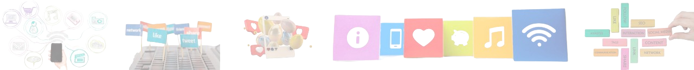

Dengan adanya media sosial di zaman sekarang, siswa bisa mempelajari hal baru dengan cepat dan efektif. Berikut adalah beberapa peran utama media sosial dalam dunia pendidikan:
1. Sumber Informasi dan Wawasan
Seperti yang sudah dikatakan tadi, media sosial dapat digunakan sebagai sumber informasi yang luas dan beragam. Melalui platform seperti YouTube, Instagram, dan TikTok, siswa dapat mengakses berbagai konten edukatif dalam bentuk video, gambar, atau infografis yang membantu pemahaman materi pelajaran.
2. Mendukung Pembelajaran Mandiri
Media sosial memungkinkan siswa untuk belajar secara mandiri dengan mengakses berbagai sumber pembelajaran online. Situs seperti Khan Academy, Coursera, dan EdX menyediakan kursus-kursus gratis yang dapat membantu siswa memperdalam pemahaman mereka terhadap berbagai mata pelajaran. Hal ini tidak hanya mendukung siswa dalam belajar tetapi juga dalam kemandirian.
3. Menggunakan Media untuk Berbagi Materi Pembelajaran
Guru dan siswa dapat memanfaatkan media sosial untuk berbagi materi pembelajaran dalam berbagai format, seperti dokumen, presentasi, atau video. Dengan demikian, proses pembelajaran menjadi lebih fleksibel dan mudah diakses kapan saja. Contohnya seperti Whatsapp bisa memudahkan berbagi materi antar guru dan siswa maupun antar siswa.
4. Motivasi siswi dalam belajar
Media sosial memiliki daya tarik tersendiri bagi generasi muda. Dengan memanfaatkan platform ini dalam pembelajaran, siswa menjadi lebih termotivasi dan bersemangat dalam mempelajari suatu materi. Misalnya, melalui kuis interaktif di Instagram atau diskusi online di Facebook Groups. Dengan motivasi yang kuat, siswa akan jauh memiliki keinginan dan lebih efektif untuk belajar.
5. Meningkatkan Kreativitas dan Keterampilan Digital
Dengan menggunakan media sosial, siswa dapat mengembangkan kreativitas mereka, seperti dalam pembuatan konten edukatif, video pembelajaran, atau presentasi digital. Selain itu, penggunaan media sosial juga meningkatkan keterampilan digital yang sangat dibutuhkan di era modern.